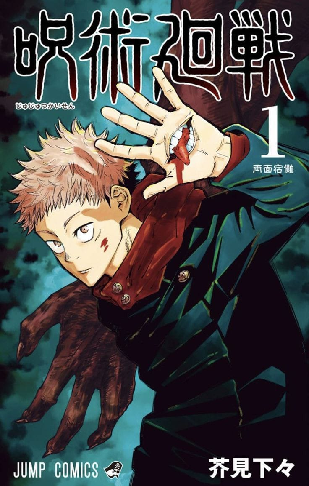
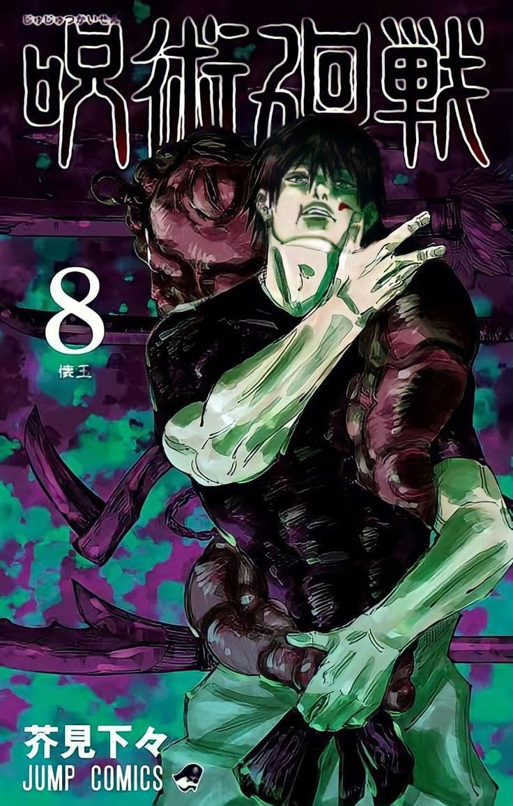
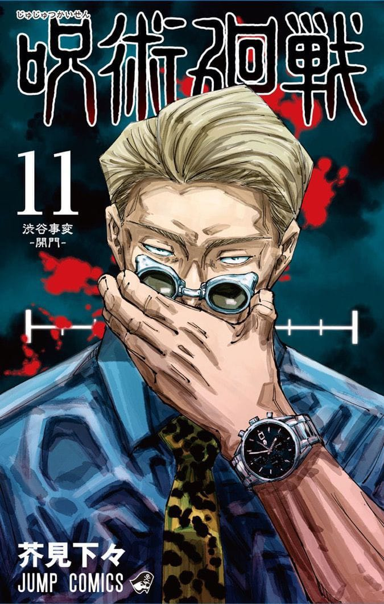
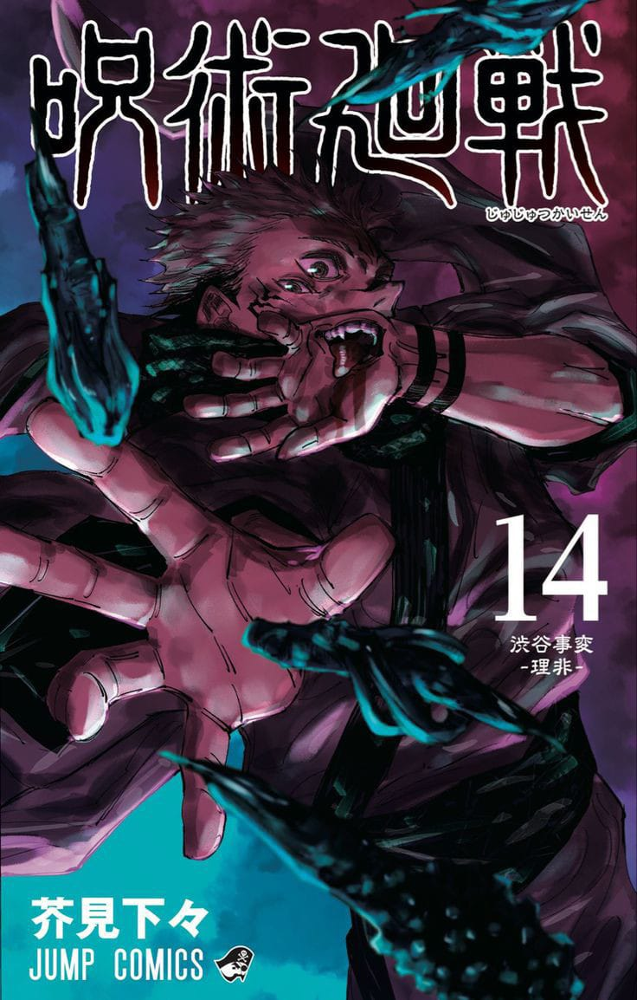

JUJUTSU KAISEN
volume-0.
Jujutsu Kaisen
"Jujutsu Kaisen" Volume 0 - Tokyo Metropolitan Curse Technical School,is a prequel to the main series. It introduces readers to Yuta Okkotsu, a high school student who becomes involved in the world of jujutsu sorcery after being cursed by the spirit of his deceased friend. The volume provides background on the curse and the jujutsu society, setting the stage for the events of the main series. If you have any specific questions about the volume or its content, feel free to ask!

JUJUTSU KAISEN
volume-1
Jujutsu Kaisen
"Jujutsu Kaisen" Volume 1 starts the main storyline of the series. It introduces Yuji Itadori, a high school student with extraordinary physical abilities, who becomes involved in the world of jujutsu sorcery after consuming a cursed object—Sukuna Ryo, a powerful and malevolent curse. Following this, Yuji joins Tokyo Jujutsu High School to learn how to control his new powers and combat curses, alongside fellow students Megumi Fushiguro and Nobara Kugisaki, and under the guidance of their teacher, Satoru Gojo. The volume sets up the conflict and themes of the series, including the struggle between humans and curses.

JUJUTSU KAISEN
volume-08
Jujutsu Kaisen
Shibuya Incident: The volume continues the Shibuya Incident arc, where a major battle erupts in Shibuya during a Halloween event. This arc involves complex battles and high stakes, with curses attacking civilians and jujutsu sorcerers fighting to protect them.
The volume features intense battles between jujutsu sorcerers and powerful curses, including Sukuna, who plays a central role in the chaos. It showcases the efforts of Yuji Itadori and his allies to navigate the increasingly perilous situation.
The volume delves into the character development of both main and supporting characters, revealing their abilities, strategies, and personal struggles amidst the turmoil of the Shibuya Incident.The volume introduces new threats and complexities, including powerful curses and antagonists that challenge the protagonists in unexpected ways.

JUJUTSU KAISEN
volume-09
Jujutsu Kaisen
The conflict in Shibuya escalates, with Yuji Itadori and his allies facing off against powerful curses and formidable enemies. The volume delves into the chaos and high stakes of the ongoing Shibuya Incident. Key characters face significant challenges, and their abilities and strategies are put to the test. The volume explores their personal growth and the impact of the incident on their lives.
The volume introduces new antagonists and complications, further intensifying the conflict and setting the stage for future confrontations in the series.
The action is intense, and the plot thickens as the stakes rise in the Shibuya Incident arc.

JUJUTSU KAISEN
volume-11
Jujutsu Kaisen
The volume continues the Kyoto Goodwill Event, showcasing the ongoing rivalry between Tokyo and Kyoto Jujutsu High Schools. It features battles between the students from both schools, each using their unique jujutsu techniques.Character Showcases: The volume highlights the abilities and personalities of various characters from both schools, including notable confrontations and strategies during the event.Major Battles: Key battles and fights are depicted, involving both main and supporting characters. These battles are crucial for character development and the progression of the story.Impact on Characters: The volume explores the impact of the event on the characters, their growth, and their relationships with one another.

JUJUTSU KAISEN
volume-14
Jujutsu Kaisen
The volume deals with the repercussions of the Shibuya Incident, including the impact on both the jujutsu sorcerers and the general public. The chaos and devastation from the incident continue to affect the characters.
The volume introduces new characters and factions that emerge in the wake of the Shibuya Incident, adding new layers to the ongoing conflict.
Yuji Itadori, along with his allies, faces new threats and personal challenges. The volume explores their struggles as they come to terms with recent events and prepare for future battles. The volume progresses several key plotlines, setting the stage for upcoming confrontations and deepening the overarching narrative of the series.